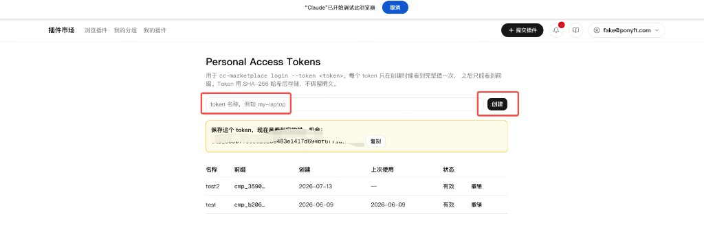
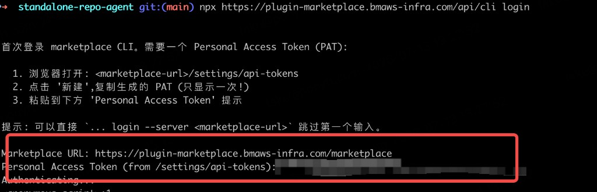
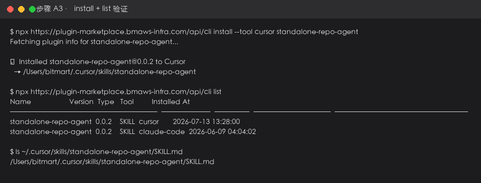
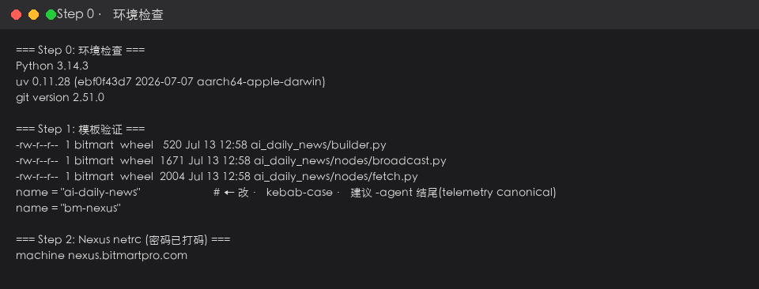
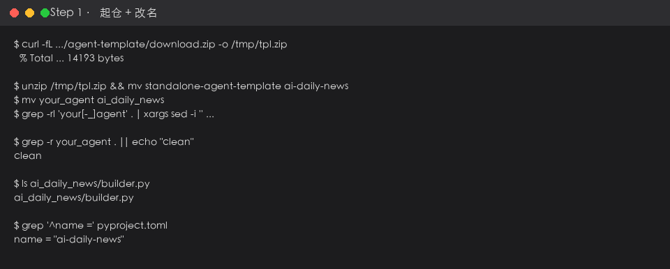
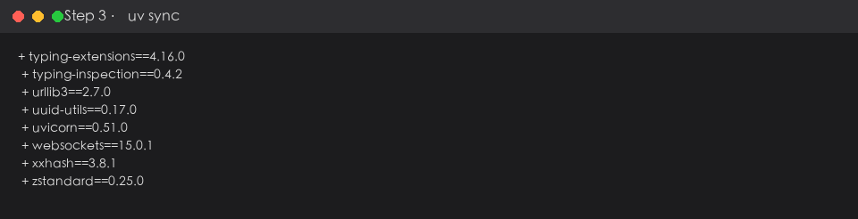
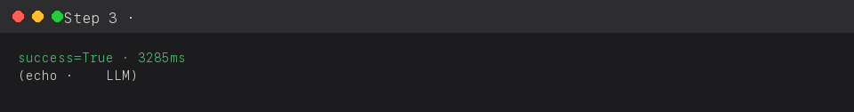
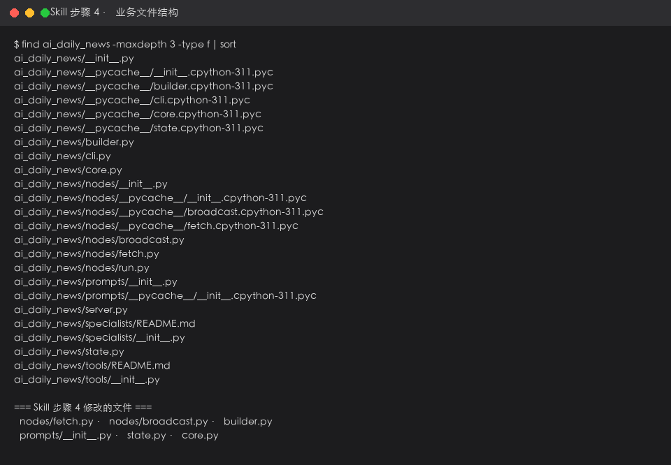
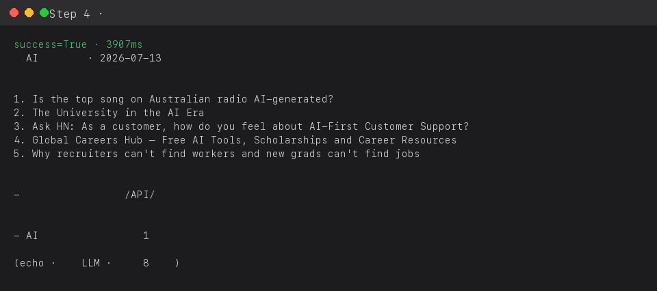
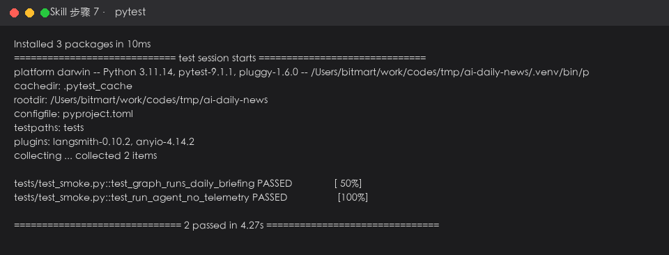

从安装 Skill 到上线：AI 最新资讯每日播报
正确姿势：先用 npx … cc-marketplace install standalone-repo-agent 把 Skill 装进 Cursor，再在对话里让 Agent 按 Skill 的 9 步引导你起仓、改业务、测、上线。本文是本次完整实操记录（Demo 工程已删除后重做）。
总流程（Skill + Agent 组合）
A3 install + list
描述要做的 Agent
起仓 / Nexus / 跑通
每日播报
Skill 教你怎么建（透明、可改）· 平台 Portal「新建 agent」向导（agent-creator）是替你自动生成工程，两条路 Skill 里都写了，本 Walkthrough 走 Skill 手动路。
安装 standalone-repo-agent Skill（Marketplace 三步）
~/.cursor/skills/standalone-repo-agent/SKILL.md）。装好后，在 Cursor 对话里描述要做的 Agent，AI 会读取 Skill 按 9 步引导你操作。完整命令（三步顺序执行）：
# 步骤 A2 · 登录（需先在 Web UI 创建 PAT，见 A1）
npx https://plugin-marketplace.bmaws-infra.com/api/cli login
# 步骤 A3 · 安装到 Cursor（必须加 --tool cursor）
npx https://plugin-marketplace.bmaws-infra.com/api/cli install --tool cursor standalone-repo-agent
# 步骤 A3 · 验证
npx https://plugin-marketplace.bmaws-infra.com/api/cli list
ls ~/.cursor/skills/standalone-repo-agent/SKILL.mdA1 · 在插件市场 Web UI 创建 Personal Access Token
login 需要 PAT 鉴权。Token 只在创建时显示一次，务必立刻复制保存。- 打开插件市场 → 左侧或设置进入 Personal Access Tokens 页面
- 输入 token 名称（如
my-laptop）→ 点 创建 - 黄色提示框里复制 token（或点「复制」）—— 关闭页面后无法再查看完整 token

截图 · 插件市场 Personal Access Tokens 页 · 创建 token 并复制（只显示一次）
A2 · 终端执行 login，粘贴 PAT
~/.cc-marketplace/config.json，后续 install / list 不再重复登录。npx https://plugin-marketplace.bmaws-infra.com/api/cli login按提示填写：
- Marketplace server URL：
https://plugin-marketplace.bmaws-infra.com/marketplace - Personal Access Token：粘贴 A1 复制的 token
也可一行完成（跳过交互）：
npx https://plugin-marketplace.bmaws-infra.com/api/cli login \
--server https://plugin-marketplace.bmaws-infra.com/marketplace \
--token '<你的PAT>'
截图 · 终端 cc-marketplace login · 填写 server URL + 粘贴 PAT · Authenticating…
install，不再报 Session expiredA3 · install 到 Cursor + list 验证
--tool cursor 时 CLI 默认只装到 Claude Code。npx https://plugin-marketplace.bmaws-infra.com/api/cli install --tool cursor standalone-repo-agent
npx https://plugin-marketplace.bmaws-infra.com/api/cli list期望输出：
- install 打印
✓ Installed standalone-repo-agent@0.0.2 to Cursor及路径~/.cursor/skills/standalone-repo-agent - list 里出现一行
Tool = cursor（可与 claude-code 那行并存）

截图 · install 成功 + list 可见 tool=cursor + SKILL.md 路径存在
Session expired → 重做 A1+A2。list 只有 claude-code 没有 cursor → install 时漏了 --tool cursor。在 Cursor 里触发 Skill
本次 Walkthrough 即上述对话的完整执行记录，Demo 路径：/Users/bitmart/work/codes/tmp/ai-daily-news
环境检查（Skill 步骤 0）
python3 --version
uv --version
起仓 + 改名（Skill 步骤 1）
your_agent → ai_daily_news，得到标准独立仓骨架。curl -fL http://gov-agents-ui.bmaicsaws-prod.com/portal/v1/agent-template/download.zip -o /tmp/tpl.zip
unzip /tmp/tpl.zip && mv standalone-agent-template ai-daily-news && cd ai-daily-news
mv your_agent ai_daily_news
grep -rl 'your[-_]agent' . | xargs sed -i '' 's/your-agent/ai-daily-news/g; s/your_agent/ai_daily_news/g'
git init && git add -A && git commit -m "init ai-daily-news"
ai_daily_news/builder.py 在包根 · name = "ai-daily-news"配 Nexus（Skill 步骤 2）
ai-trust-toolkit-bom 从公司 Nexus 拉，只读账号 pypi_pull 写 ~/.netrc。printf 'machine nexus.bitmartpro.com\nlogin pypi_pull\npassword <PASSWORD>\n' >> ~/.netrc
chmod 600 ~/.netrc安装 + 首次跑通（Skill 步骤 3）
uv sync
cp .env.example .env # 可选填 ANTHROPIC_API_KEY
uv run ai-daily-news run "你好"

写业务图（Skill 步骤 4 · 核心）
ai_daily_news/
├── builder.py ← fetch → broadcast（不在 nodes/）
├── state.py ← raw_items / headlines_text
├── core.py
└── nodes/
├── fetch.py ← 抓资讯
└── broadcast.py ← 出播报
改 prompts · state · nodes/fetch · nodes/broadcast · builder · core

uv run ai-daily-news run "2026-07-13"
截图 · 真实 RSS 8 条 · 📢 每日播报格式 · 无 LLM key 时 echo 结构化兜底
telemetry · 测试 · 上线（Skill 步骤 5-9）
步骤 5 telemetry · core.py：
record_effect("briefing_sent", 1)
success = bool(final.get("output")) and bool(final.get("headlines_text"))步骤 6 形态：本 Demo 用 CLI + cron 定时；要 IDE 集成加 MCP · 要 HTTP 加 Pod（Skill 步骤 6 表）。
步骤 7 测试：
uv run --extra test pytest -v
步骤 8 安全：只读公开 RSS · 跳过正式评审。若加内网写操作 → 答 Skill 安全 7 问。
步骤 9 上线：
uv build && uv publish --publish-url http://nexus.bitmartpro.com/repository/bm-pypi/ ...
# 测试环境 obelisk 验证 → 生产灰度一页清单（Skill 末尾）：☐ Skill 已 install 到 Cursor ☐ 步骤 1-3 跑通 ☐ 步骤 4 业务图 ☐ 步骤 5 telemetry ☐ 步骤 7 pytest 绿 ☐ 步骤 9 测试环境验 Portal